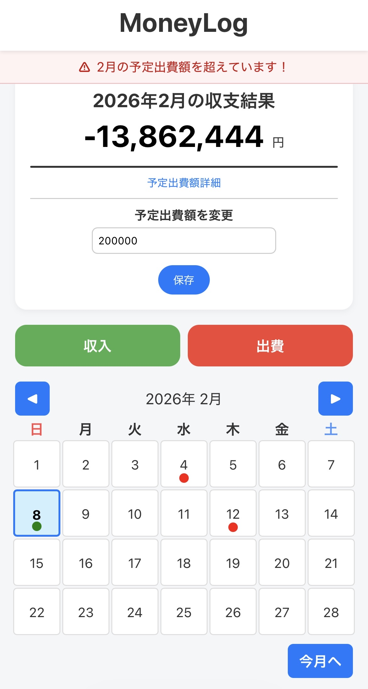
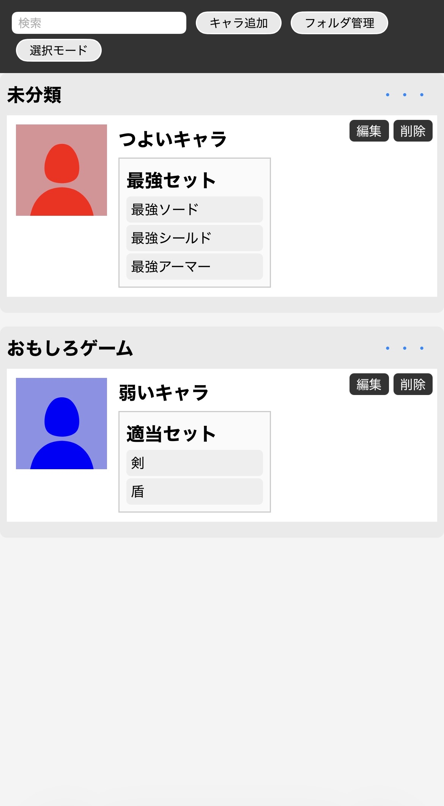

PROFILE
名前：浦田一冴
在学中：麻生情報ビジネス専門学校
趣味：スマホゲーム、サイクリング
設計やフロントエンドの分野に興味があり、特にUI/UXには強いこだわりを持っています。
感覚的にわかりやすいボタン配置や、使っていて違和感を覚えない色遣いなどを意識しながら制作することで、
ユーザーが本来の目的に集中できるようなサイトやアプリつくりを心掛けています。
中学・高校は東福岡に在学しており、約12年間博多駅周辺に通ってきました。
そのため、博多〜東比恵周辺の道には自信があります。
感覚的にわかりやすいボタン配置や、使っていて違和感を覚えない色遣いなどを意識しながら制作することで、
ユーザーが本来の目的に集中できるようなサイトやアプリつくりを心掛けています。
中学・高校は東福岡に在学しており、約12年間博多駅周辺に通ってきました。
そのため、博多〜東比恵周辺の道には自信があります。
WORKS

収支管理サイト
去年、アルバイトのしすぎで扶養を超えてしまった友人が、今年こそは扶養を越さないことを目指すために、一緒に作ったサイトです。機能を加えすぎると肝心な部分が見えずらくなるので、よりコンパクトなUI/UXを心掛けました。

装備メモサイト
前述の通り、スマホゲームをよくプレイするのですが、キャラなどに着ける装備やアイテムなどをメモするのに適したレイアウトのメモアプリなどが無かったので作成しました。

3年後期チーム開発のFigma
3年後期のチーム開発では、気軽に共有できるカレンダーサイトを作成し、私は主に設計を担当しました。2年次のチーム開発ではあまりコミュニケーションが取れておらず、機能を加えすぎた結果開発が追い付かなかったので、反省活かし、最低限の機能を班員と話し合いながら作成しました。
SKILLs
フロントエンド

- HTML / CSS
- JavaScript
バックエンド

- PHP
- MySQL
ツール

- VS Code
- GitHub
- Eclipse
- Figma
その他
- 簡単な画像編集
- 簡単な動画編集
制作の見た目や伝わりやすさも重視します。